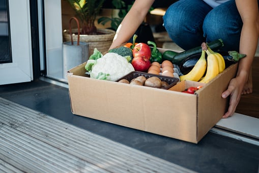

4
3
2
1
and lifestyle agendas
Changing demand
Technology
Pricing and brands
engagement models
Evolving
A priority gap
Increased focus on value
Read the Latest Reports
45%
Singles
51%
Women
60%
shoppers
Higher-income
60%
Generation Z
1
Willingness to pay for sustainability, by demographic
In Austria, Germany, and Switzerland.
1
20%
yet only
55%
seven priorities
and IT are among their top
of CEOs say that technology
currently investigating warehouse automation
and logistics professionals say they are
of European retail, manufacturing,
Sustainability and health
are top of mind for today’s grocery retailers: An interview with Frans Muller →
The path forward for sustainability in European grocery retail →
these “green” shoppers.
mission and operating model to cater to
are weaving sustainability into their
consumer decisions. Leading grocers
are increasingly powerful factors in
packaging, and a retailer’s reputation
Where products come from, their
Prioritizing flexibility in
tech strategies can unlock new value for grocers →
The path forward for European grocery retailers →
technology a top investment priority.
Yet most grocery retailers have not made
common fuel for all of these objectives.
including automation and analytics, is the
supply chain management: technology,
Growth, customer segmentation, and
90%
The potential for powerhouse Private Brands: an updated view →
attract these consumers.
investing in private labels to retain or
with a number of strategies, including
Leading grocery retailers have responded
new brands. In short, value is king.
which has made them more likely to try
Consumers are more price conscious,
Disruption and uncertainty: The state of grocery 2022—China →
E-commerce is shifting how European grocery retailers seek profitable growth →
Making online grocery
a winning proposition →
often = online is primary channel.
Occasionally = once every 2–3 months, regularly = 2–3 times a month,
41%
35%

29%
Often
Regularly
Occasionally
1
Online shopping experience in 2020
Share of European consumers within given shopping segment
shopping in 2021
Intention to increase online
boosting proftability.
looks set to endure. The next frontier:
channel during the pandemic, a trend that
of e-grocery. Consumers embraced this
are both being shaped by the rapid growth
locations and importance of omnichannel
The changing role of brick-and-mortar
Disruption and upheaval. Evolving customer preferences. The rise of e-commerce.
Grocery retailers have had to become more adaptive, innovative, and forward looking to keep pace. Which trends have emerged and, more important, which ones are set to endure?
In-depth research sheds light on the changing nature of grocery around the world.
A new era
in grocery
of US consumers plan to
buy the same or more private brands after the pandemic
1




Value-for-money perception must go beyond price for European grocers →
Automation opportunities
in North American grocery →
State of Grocery China
State of Grocery Europe
State of Grocery India
State of Grocery North America
Recommended Reading
Recommended Reading
Recommended Reading
Recommended Reading
Key Contacts
Daniel Läubli
Bill Aull
Alex Sawaya
Abhishek Malhotra
China
Europe
North America
India
Read the full reports
State of Grocery China
State of Grocery Europe
State of Grocery India
State of Grocery North America